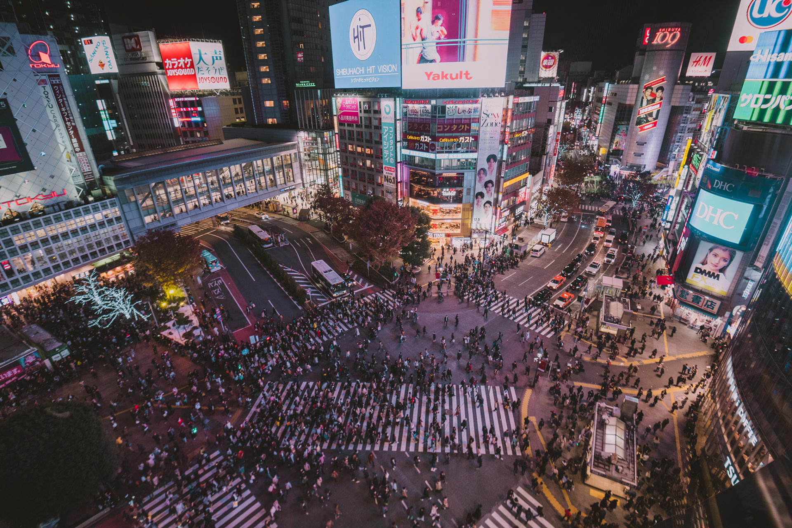
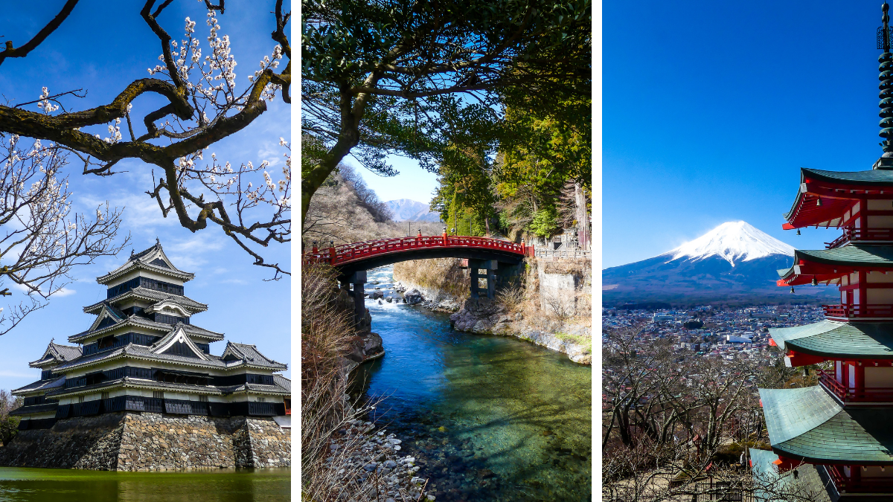
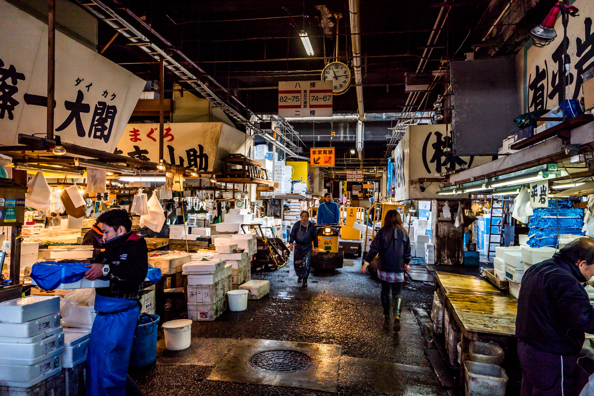

Tokyo


Shibuya est un des 23 arrondissements spéciaux formant Tokyo, au Japon. L'arrondissement a été fondé en 1932. En même temps qu'au nom de l'arrondissement, le nom « Shibuya » se rapporte à la gare et au quartier d'affaires autour de la gare.

Capitale animée du Japon, Tokyo associe les styles ultramodernes et traditionnels, dans un mélange de gratte-ciel aux néons lumineux et de temples anciens. Le somptueux Meiji-jingū est un sanctuaire shinto réputé pour son entrée imposante et les bois qui l'environnent.

Tsukiji est un quartier de Tokyo qui abrite le célèbre plus grand marché aux poissons du monde, fondé en 1935. La visite des marchés intérieur et extérieur est possible seulement dans le respect de certaines règles.